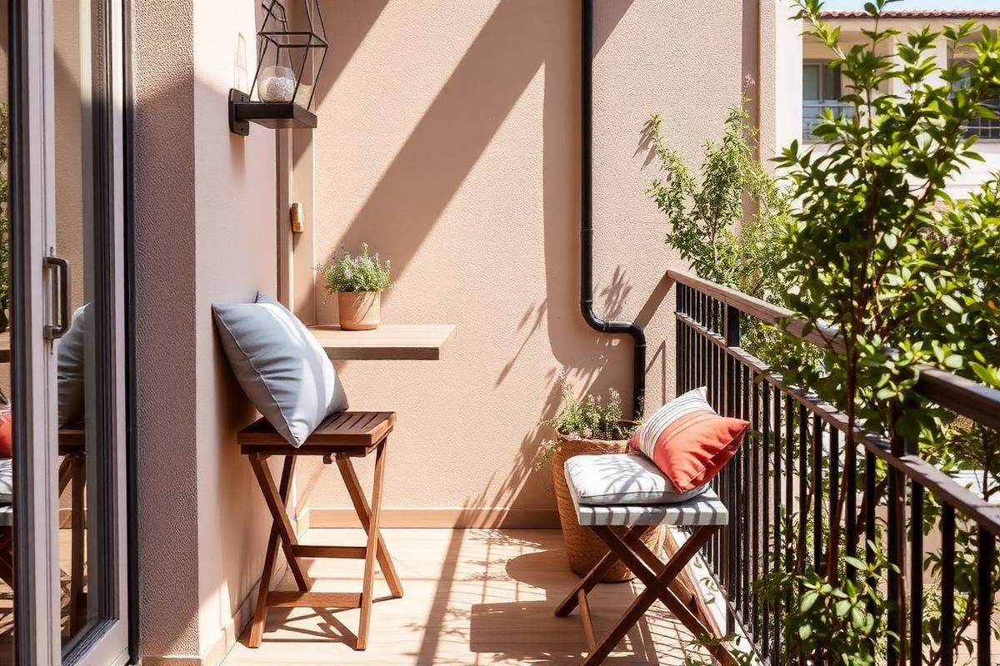

Small Patio Furniture Guide: Choosing Pieces That Fit

The reason so many small patios end up unused is that they were furnished with pieces designed for a lawn. A standard outdoor dining chair is 24 inches deep and needs another 24 inches behind it to pull out. Put four of those around a 48-inch table and you need a footprint of nearly nine feet square, which is more than most balconies and courtyards have. Small outdoor spaces demand different dimensions, not smaller versions of the same thing.
Measure the real usable space
Start by drawing the footprint and subtracting the areas you cannot use: the door swing, the path from door to railing, any drain or access hatch, and a strip along any wall where water runs off the roof. On a typical 6 by 10 foot balcony that often leaves a genuinely usable area of about 5 by 6 feet. Furnishing for that number rather than the full footprint is what makes the difference.
- Subtract the door swing — usually a 32-inch arc.
- Keep a clear 24-inch path to any railing gate or fire escape.
- Leave the strip directly below a roof edge free; it stays wet longest.
- Note where the sun actually falls at the time you would use the space.
Clearance rules for outdoor seating
Indoors we allow 36 inches behind a dining chair. Outdoors, with folding or armless chairs, you can drop to 24 inches without it feeling tight, and to 20 inches if people enter from one side only. Between a lounge chair and a low table, 14 to 16 inches is comfortable. These numbers are what let a small terrace seat four rather than two.
The pieces that actually fit
The most useful small-space outdoor pieces, in the order I would buy them: two folding armless chairs, a round bistro table 24 to 28 inches across, a folding side table, a bench with storage inside, and a single deep lounge chair if the space allows. A round table is critical — corners consume circulation space and a round top seats an extra person in the same footprint.

- Round bistro table, 24 to 28 inches: seats two comfortably, three at a push.
- Armless folding chairs: 17 to 19 inches wide instead of the usual 24.
- Storage bench: seating plus a home for cushions in one footprint.
- Nesting side tables: pull apart when guests come, push together the rest of the time.
Materials that survive outdoors
Powder-coated aluminium is the best all-round choice for small spaces: light enough to move daily, genuinely rust-proof, and available in slim profiles. Teak and acacia age beautifully but need oiling once a year and are heavy. Steel is strong but will rust at any chip in the coating, particularly near the coast. Rattan-effect polyethylene wears well as long as it is over an aluminium frame rather than steel.
Avoid untreated softwood on a balcony. It will grey unevenly, hold water against the floor surface, and in a shaded space it grows algae within a season.
Folding, stacking, and wall-mounted
In any space under about 60 square feet, at least half the furniture should fold, stack, or mount to a wall. A wall-mounted drop-leaf table folds to under four inches deep and gives you a genuine dining surface when you need one. Stackable stools take a quarter of the floor space of four chairs. Neither compromises comfort in the way people expect, provided you buy seat pads.
Cushions and outdoor textiles
Cushions are what turn outdoor furniture from tolerable to comfortable, and they are also the first thing ruined by weather. Buy covers in solution-dyed acrylic rather than printed polyester — the colour goes through the fibre so it does not fade, and it dries fast. Store them in the bench or a waterproof bag rather than leaving them out; even quick-dry foam holds damp for days in autumn.
- Solution-dyed acrylic covers with quick-dry reticulated foam.
- One outdoor rug, sized to sit under the front legs of the seating only.
- Two or three cushions maximum on a small terrace — more reads as clutter.
- A weatherproof storage bag or bench so nothing is left out overnight.
Three layouts that work
- Narrow balcony under 4 feet deep: wall-mounted folding table with two stools, plants along the railing.
- Square courtyard 8 by 8 feet: round bistro table centred with four armless chairs and planters in the corners.
- L-shaped terrace: a corner bench along the two walls with a low table, freeing the whole open side.
Storage and overwintering
Plan storage before you buy furniture rather than after. A bench with a lined interior holds cushions, a folded parasol, and a couple of throws. If nothing else, buy a heavy-duty waterproof bag that lives in the corner. Over winter, bring textiles indoors, wash and dry them fully before storing, and either cover aluminium furniture or turn it to drain. Teak can stay out uncovered; it will silver and that is fine.
Buy in this order and you will not overspend: seating, then a table, then storage, then lighting, then textiles. Most people invert it, start with a large table, and discover afterwards that nobody can get past it to sit down.
Key takeaways
- Measure the usable footprint after subtracting door swings and access paths.
- Outdoors you can drop chair clearance to 24 inches.
- Round tables seat more people in less space than square ones.
- Half the furniture in a small space should fold, stack, or wall-mount.
- Plan cushion storage before you buy the furniture.
Frequently asked questions
What size table fits on a small balcony?
A round bistro table 24 to 28 inches across seats two comfortably. On narrow balconies, use a wall-mounted drop-leaf table instead.
How much clearance do outdoor chairs need?
Allow 24 inches behind a folding or armless chair, and as little as 20 inches if people enter from one side only.
What is the best material for small patio furniture?
Powder-coated aluminium — light enough to move, rust-proof, and available in slim profiles that suit tight spaces.
Can I leave outdoor cushions outside?
Not overnight. Even quick-dry foam holds damp; store cushions in a bench or waterproof bag between uses.
How do I fit four seats on a small patio?
Use a round table with armless folding chairs, or a corner bench along two walls, which seats more people in less depth.

Sophia Bennett is a certified interior stylist and the senior editor at Styleire. She has spent more than eight years helping homeowners and renters create warm, functional interiors, with hands-on experience across small city apartments and family homes. Her work has been informed by close collaboration with independent designers, craftspeople, and product testers.
View full profile →Related reading

Small Balcony Decor Ideas: Turn 30 Square Feet Into a Room
A small balcony is not a wasted balcony. With three good choices, it becomes another room.

Outdoor Dining Setup: A Simple Blueprint
Outdoor Dining Setup: A Simple Blueprint — a clear, editor-tested guide covering the essentials without the filler.

Outdoor Plant Styling Ideas for Patios and Balconies
Plants do more for a small outdoor space than furniture ever will — as long as they are grouped, sized, and repeated with some discipline.